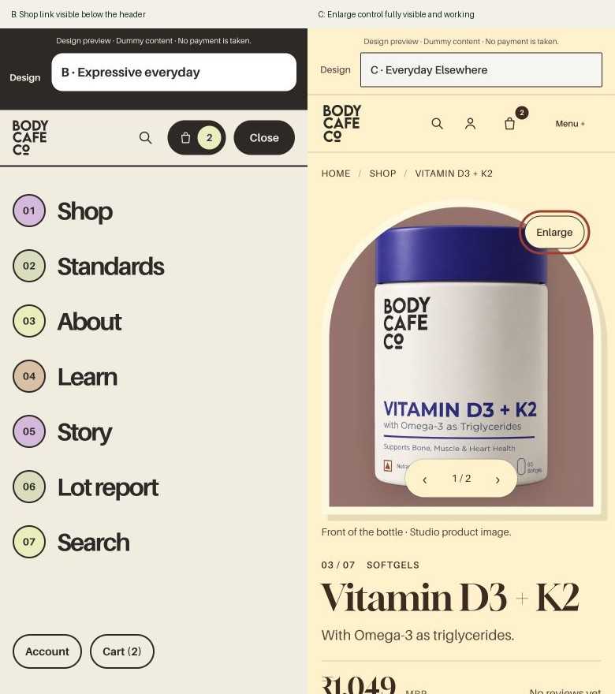

← Original audit · Open updated website
26 October 2026 · Local implementation update
The original audit remains a snapshot of the site before these repairs. Its nine P1 actions have been addressed locally. The broader design and content roadmap remains available.
Verification: 74 existing tests passed; preview-content regression checks passed; 56 product-page content checks, 22 mobile-menu journeys and 14 C image-viewer checks passed. The static export was rebuilt and its checks passed. Nothing was published.
